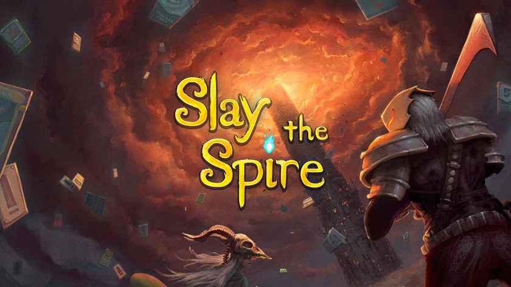

|  |
杀戮尖塔（Slay the Spire） 是Mega Crit Games制作发行的一款卡牌类Roguelike游戏。 该作将传统的卡牌构建及Roguelike玩法结合在一起。玩家需要在游戏中打造出独一无二的牌组，遭遇无数离奇的生物，发现威力强大的遗物，挑战并屠戮高塔。 背景设定 《杀戮尖塔》并没有明晰的故事剧情线，通过角色背景介绍及中途遭遇的事件及物品来介绍背景。唯一能够明确的是，角色们必须通过杀戮来攀爬高塔，直至征服高塔。 游戏规则 每回合开始时，玩家可从抽牌堆抽5张牌，并获得3点行动点。打出手牌需要花费能量点。在玩家回合中，可以在敌人上方看见他们的意图；玩家的回合结束后，手牌会移到玩家的弃牌堆。 玩家最多可持有10张牌，多余的牌将直接被移到玩家的弃牌堆。当玩家抽牌堆没牌时，弃牌堆将洗牌加入至抽牌堆。 杀死对手以赢得战斗。 游戏评测 《杀戮尖塔》鼓励玩家开展实验，提供犯错的空间和时间，当玩家在一层层有趣的宛如拼图的战斗中穿行时，它又能从各个角度发起挑战。整个游戏的创意和构思十分精妙。在该作脱离早期体验阶段之前，甚至就已经启发了十几款类似的游戏，但《杀戮尖塔》在两年间运营的非常好，以至于没有一款能够和它相提并论。（IGN评） 《杀戮尖塔》总体称得上优秀，EA阶段就表现出了极大潜力。对于这样一款小众的独立游戏来说，质量优秀并且还有相当到位的汉化，很好的帮助了它被数量庞大的国内玩家所认知，冲上热销榜高位并不是巧合。 （3DM评） |
| back |